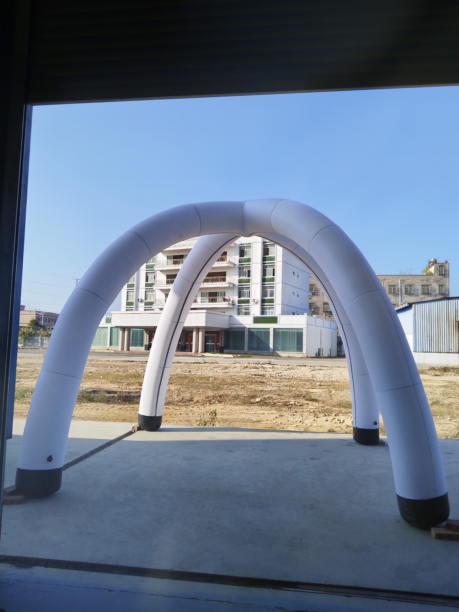

Factory-direct B2B manufacturing
Inflatable Tent Manufacturer for Events, Racing and Outdoor Promotions
Inflatable tent manufacturer for outdoor events, racing and promotions. Spider tents, race gates, advertising arches and custom printed event structures. WaiKwan helps importers, distributors, print shops, event companies and brand teams create repeatable product programs with practical specifications rather than generic catalog promises.

What WaiKwan manufactures
Guangxi WaiKwan Tent Manufacturing Co., Ltd. manufactures canopy tents, folding tents, beach flags, flag poles, flag bases, inflatable tents, race gates, dome tents, A-frame displays, backdrop systems, roll up stands, promotion counters, advertising light boxes, outdoor furniture, umbrellas, umbrella bases and tent accessories. The company serves B2B buyers that need stable production, clear specification communication and export-ready support.
For inflatable tents, the buying decision usually depends on frame or hardware strength, print method, size range, packing volume, replacement parts and how well the product fits repeat orders. WaiKwan organizes these details into quotation discussions so buyers can compare options before confirming samples or bulk production.
Common specifications
| Option 1 | Inflatable spider tents for outdoor event coverage and brand activation |
|---|---|
| Option 2 | Race gate and advertising arch structures for sports and event entrances |
| Option 3 | Custom printing options for logos, sponsor graphics and campaign colors |
| Option 4 | Export packing and production support for event rental and distributor buyers |
Buyer applications
Typical uses include trade shows, outdoor events, retail promotions, sports events, emergency relief support, roadshows, store openings and advertising displays. For agencies and distributors, WaiKwan can help align product size, graphic coverage, packaging and shipping method with the buyer's sales channel.
Custom printing can be discussed for logos, full-panel graphics, fabric backwalls, flags, counters and light box graphics. Where the final artwork file is not ready, the buyer can still request a preliminary quotation using size, quantity and target application.
How to order
- Send product type, size, quantity, material preference and destination country.
- Confirm frame, fabric, graphic area, accessories and packaging requirements.
- Review quotation, artwork proof and sample or production schedule.
- Start production, quality checking, carton labeling and export packing.
- Arrange shipment by courier, air or sea freight depending on the order plan.
Related products and resources
Common buyer questions
Can WaiKwan support OEM or ODM production?
Yes. WaiKwan supports OEM/ODM production for international buyers, including size planning, hardware selection, custom graphics, carton labeling and export-ready packaging.
What information is needed for a quotation?
Please share product type, size, quantity, frame or hardware preference, fabric and printing requirements, destination country and deadline. Artwork files can be discussed after the first quotation.
Are exact prices listed online?
Public prices are not listed because B2B pricing depends on size, specification, print coverage, quantity, packaging and shipment requirements.
Request a factory quotation
Share the product type, size, quantity, printing requirements, destination country and deadline. WaiKwan will help confirm a practical manufacturing specification for your project.
Contact WaiKwan